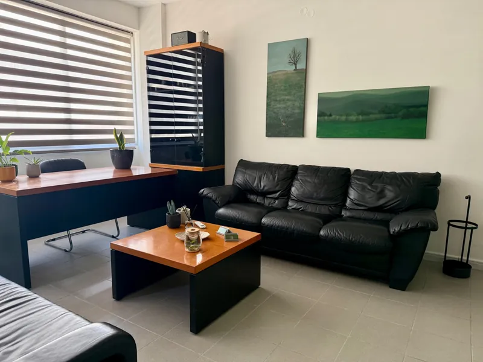
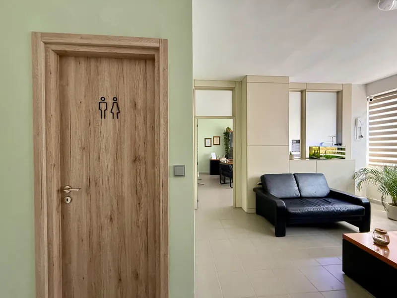
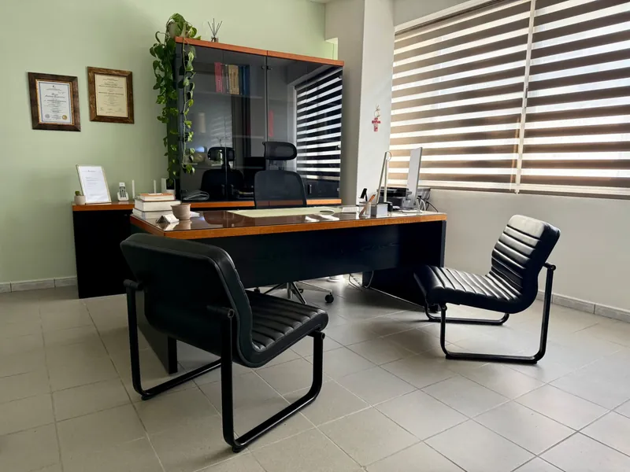
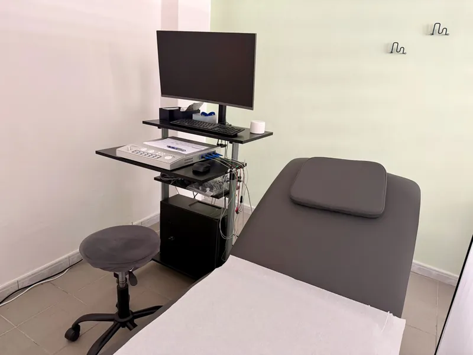
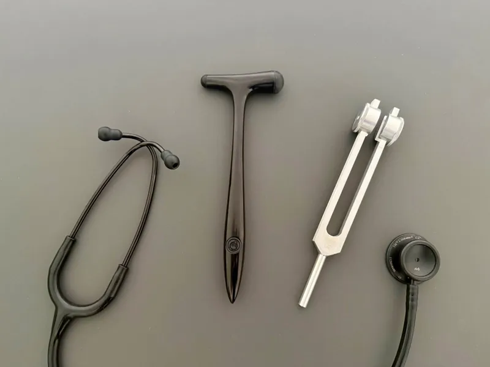
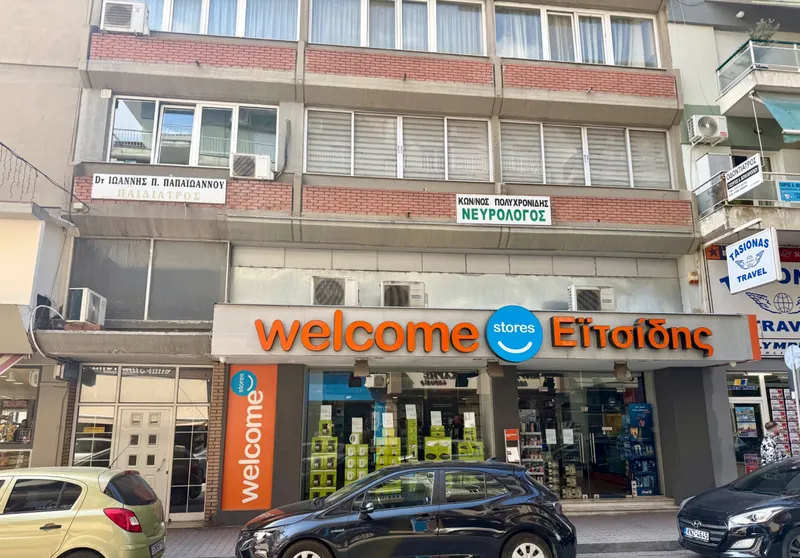

Αρχική Σελίδα
Το Ιατρείο
ΚΩΝΣΤΑΝΤΙΝΟΣ ΠΟΛΥΧΡΟΝΙΔΗΣ — ΝΕΥΡΟΛΟΓΟΣ
Ένας χώρος σχεδιασμένος για την άνεση και την ασφάλεια των ασθενών. Σύγχρονος εξοπλισμός, ήρεμη ατμόσφαιρα και προσωπική προσέγγιση σε κάθε επίσκεψη.





